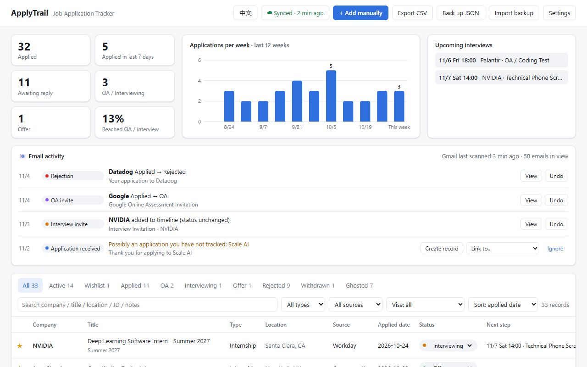

ApplyTrail is a free Chrome extension for internship and full-time job searches. It records each application with its full job description, follows up through your Gmail, and keeps your interview prep in one place.
ApplyTrail 是一个免费的 Chrome 插件，适合实习和全职求职：自动记录每次投递和完整 JD，从 Gmail 跟进进度，把面试准备放在一个地方。

When a "Thank you for applying" page appears on Greenhouse, Lever, Workday, Ashby, LinkedIn Easy Apply, Indeed and others, the application is saved. You can undo it.
在 Greenhouse、Lever、Workday、Ashby、LinkedIn Easy Apply、Indeed 等网站提交申请后，出现 “Thank you for applying” 时自动保存，可撤销。
Company, title, location, salary, visa sponsorship and the full JD are filled in for you, so the posting is still there after it is taken down.
自动填好公司、职位、地点、薪资、签证 sponsor 情况和完整 JD，职位下线后也能看。
In Gmail on the web, online assessments, interview invitations, rejections and offers update the matching application.
在 Gmail 网页版里识别 OA、面试邀请、拒信和 Offer，自动更新对应投递的状态。
Log each round, see the skills the JD asks for, open Glassdoor, LeetCode and Levels.fyi in one click, and copy an AI prompt built from the JD and your notes.
记录每轮面试，查看 JD 要求的技能，一键打开 Glassdoor、LeetCode、Levels.fyi，复制一段包含 JD 和你笔记的 AI 提示词。
Sign in once on each computer. Records sync through a hidden app folder in your own Google Drive.
每台电脑登录一次即可，记录通过你自己 Google Drive 的隐藏应用文件夹同步。
No developer server, no analytics, no ads. Your data stays in your browser and your own Drive. English and Chinese interface.
没有开发者服务器，没有统计和广告，数据只在你的浏览器和你自己的 Drive 里。中英文界面。
ApplyTrail is being reviewed for the Chrome Web Store. Until then you can install it from the source code:
ApplyTrail 正在等待 Chrome 应用商店审核。在那之前，可以从源代码安装：
chrome://extensions and turn on Developer mode (top right).manifest.json).chrome://extensions，打开右上角的开发者模式。manifest.json 的那一层）。Open an issue on GitHub or email jiahaox666@gmail.com. See the privacy policy for exactly what the extension reads and stores.
在 GitHub 提 issue，或发邮件到 jiahaox666@gmail.com。插件读取和保存哪些数据，见隐私政策。